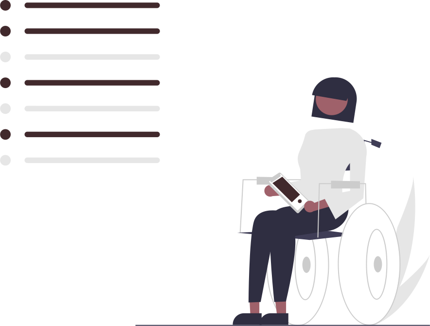

Simplifiez votre gestion de projets
ProTask vous permet d’organiser et de suivre l’avancement de vos projets en toute simplicité. Collaborez avec votre équipe, assignez des tâches et atteignez vos objectifs plus rapidement.
